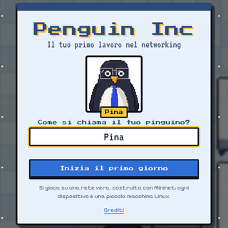

The Big Hack 2026Penguin Inc. - Open Network Academy
Presented for "The Big Hack 2026" (challenge C4 Consorzio Clara) with team Los Penguinos. A serious game about networking and cyber security played on a real network built with Mininet: each device is a Linux namespace, so pings, routes and firewall rules are real. Players configure routers and switches through a CLI (interfaces, static routes, ACLs, OSPF), trace packets to see which ACL drops them, and defend the network from brute force, DDoS and reverse shell attacks. Built with Python (Starlette), nftables, dnsmasq and vanilla JS, deployed with Docker Compose.
View Project